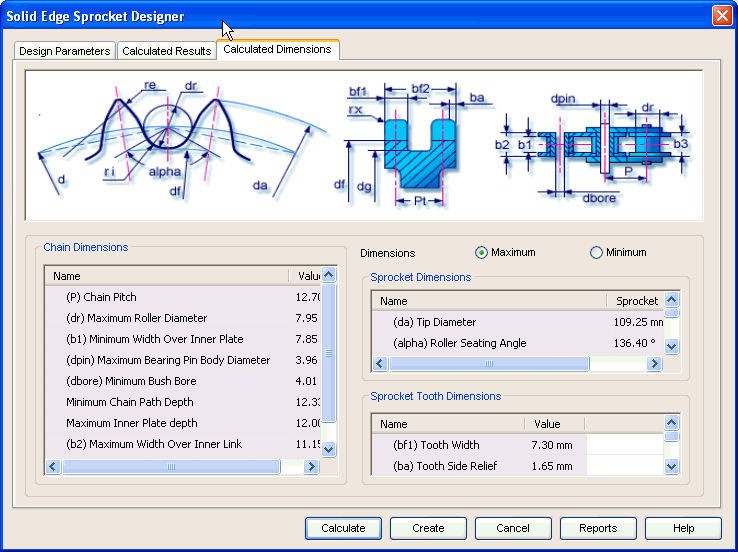

Sprocket Calculated Dimensions tab
The Calculated Dimensions tab provides the options you use to view additional results of geometrical dimensions, which are standard-based. Hence these parameters are used to build the 3D model of sprockets' set.

Displays the results related to the selected chain geometry, such as, chain pitch, maximum roller diameter and minimum bush bore.
Use this area to review the additional parameters for the individual sprockets. Tip diameter, roller seating radius are some of the important parameters.
Displays the standard-based sprocket tooth dimensions such as tooth width and tooth side relief.
Use the Maximum and Minimum option buttons to toggle between the upper and lower range for some of the sprocket parameters. Tip diameter, roller seating angle, tooth flank radius are some of the parameters you can review.